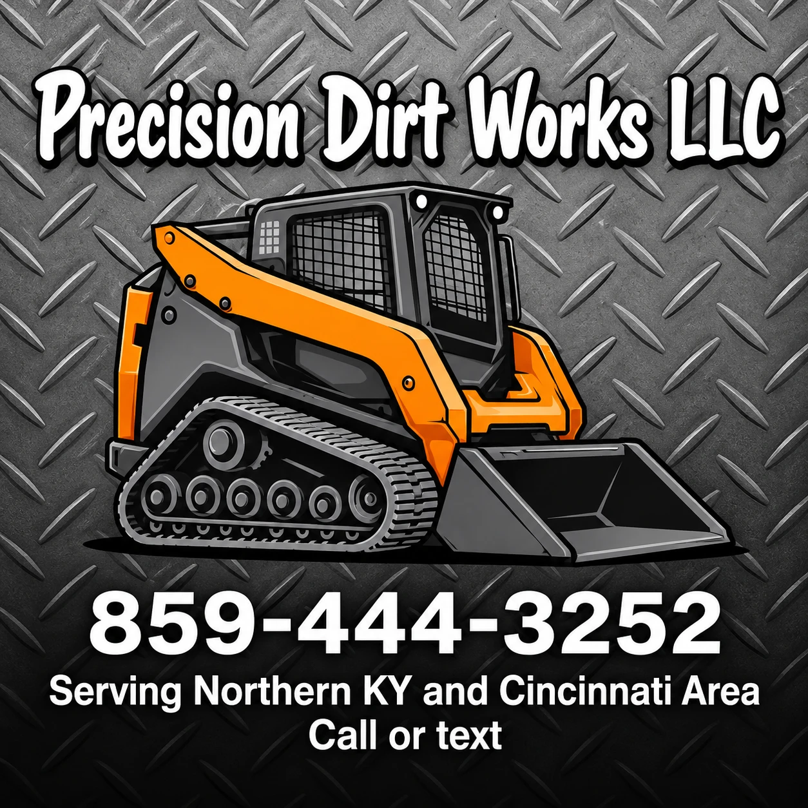

Grading, trenching, stump grinding, land clearing and fence drilling. Call or text your next project or repair.
Call or text your next project or repair
Skid steer dirt work and the jobs around it.
Ground leveling and dirt work.
Trenching for your project.
Post hole digging and fence drilling.
Stump grinding services.
Land clearing for your property.
Pressure washer services and handyman repairs.
Precision Dirt Works LLC is a local excavation and land services company based in Florence, Kentucky. Grading, trenching, post holes and clearing, plus pressure washing and handyman repairs. Any questions, call or text your next project or repair.
Based in Florence, KY and serving Northern Kentucky and the Cincinnati area. Call or text to ask about your address.
Quick answers before you call.
Dirt grading and leveling, dirt work, trenching, stump grinding, land clearing and fence drilling, plus pressure washing and handyman services.
Yes. Precision Dirt Works offers post hole digging and fence drilling.
Yes. Pressure washing and handyman repairs are part of the services.
Precision Dirt Works is based in Florence, KY and serves Northern Kentucky and the Cincinnati area. Call or text to ask about your address.
Call or text 859-444-3252 and tell us about your next project or repair.
Call or text and tell us about your next project or repair.
859-444-3252 crankpistonrod@gmail.com Florence, KY